Rocky Linux安装#
Linux系统的多数使用场景是命令行模式下，没有 图形用户界面 （GUI, Graphical User Interface），因此入门学习使用Linux可以在windows系统上使用虚拟机运行Linux系统。
准备工作#
虚拟机软件下载及安装#
windows上著名的虚拟机软件是 VMware Workstation ，此软件已面向个人用户免费了，可点击 这里 下载后使用压缩软件解压后，即可安装使用。
安装完成后，首次启动时选择个人用途，即可免费使用VMware Workstation。
提示
商业用途一般是产生收益的活动。在未购买许可证的情况下，用于商业用途可能被会软件厂商起诉吃官司。
个人用户一般学习研究使用是没有问题的，公司等营利性组织请购买许可证后使用，以防止产生法律风险。
Rocky Linux系统镜像下载#
Rocky Linux官方站点在国外，不过国内有很多镜像网站可提供下载，我们可以通过 阿里云开源镜像站 下载系统镜像。
镜像下载好后，就可以开始准备安装Rocky Linux系统了。
远程访问工具下载及安装#
因为Linux没GUI，因此使用上有些不便，提前下载一个远程访问工具可提供些使用上的便利。较为著名的远程工具为Xshell，同样也面向个人用户免费，可通过 xshell官网页面 下载安装使用。
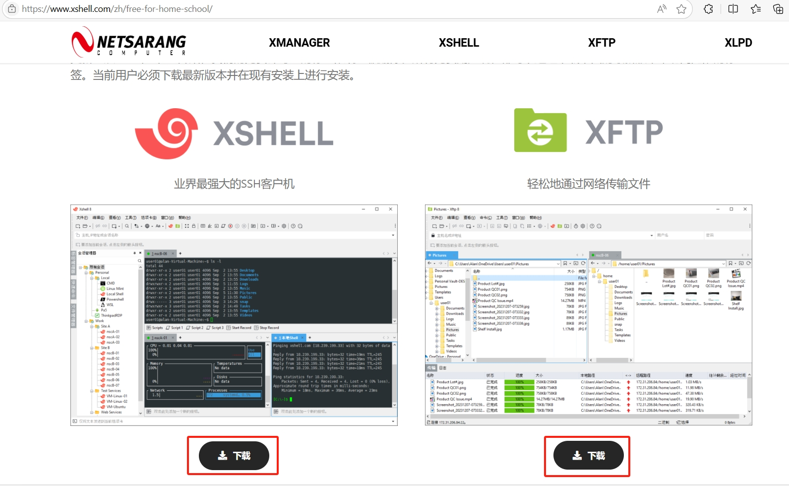同时也将xftp一并下载下来安装吧。启动时点后来可跳过注册：
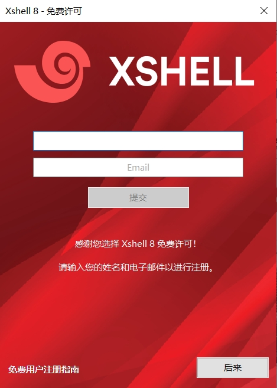Rocky Linux系统安装#
重要
需要完成VMware Workstation及xshell的安装，同时已经下载好Rocky Linux的系统镜像。
在开始之前，必须重启一下电脑以便继续下面的系统安装。
打开VMware Workstation，点击 创建新的虚拟机 ：
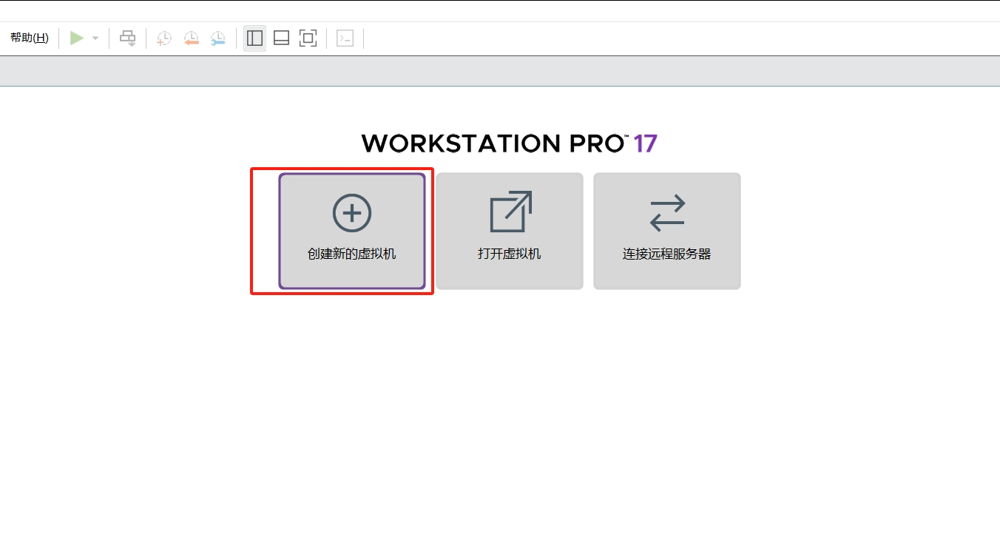选择典型，然后点击一下步：
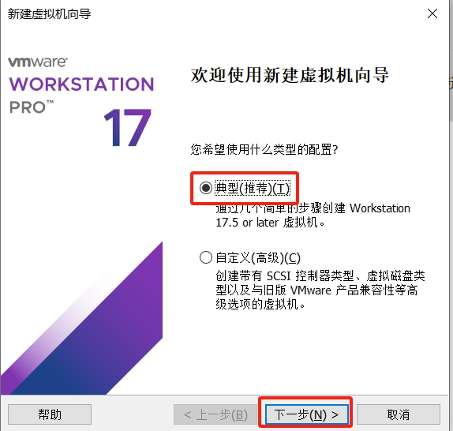选择安装程序光盘映像文件，然后点击浏览，找到刚刚下载好的系统镜像文件点击打开，最后点击下一步：
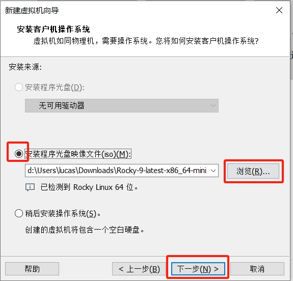这一步无须改动，直接点击下一步：
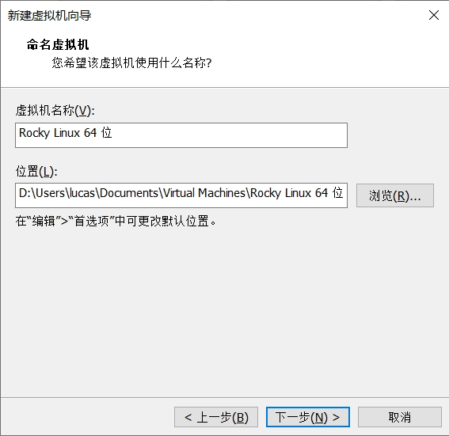这一步同样无须改动，直接点击下一步：
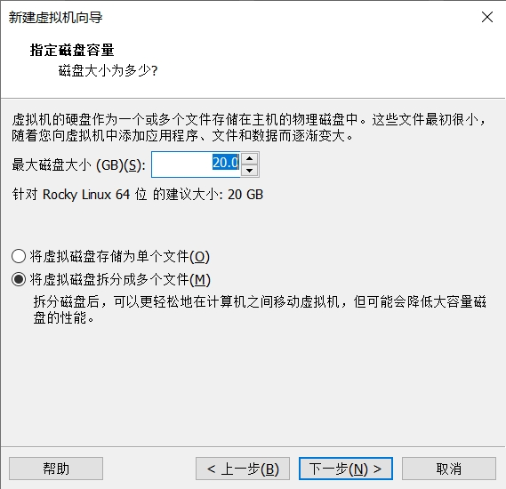此时，我们已经到了 新建虚拟机向导 的最后一步，直接点完成即可。此时虚拟机将自动启动，在看到如下页面时，鼠标单击虚拟机中的文字，然后按键盘上的上下键，选中 Install Rocky Linux 9 然后按下回车键：
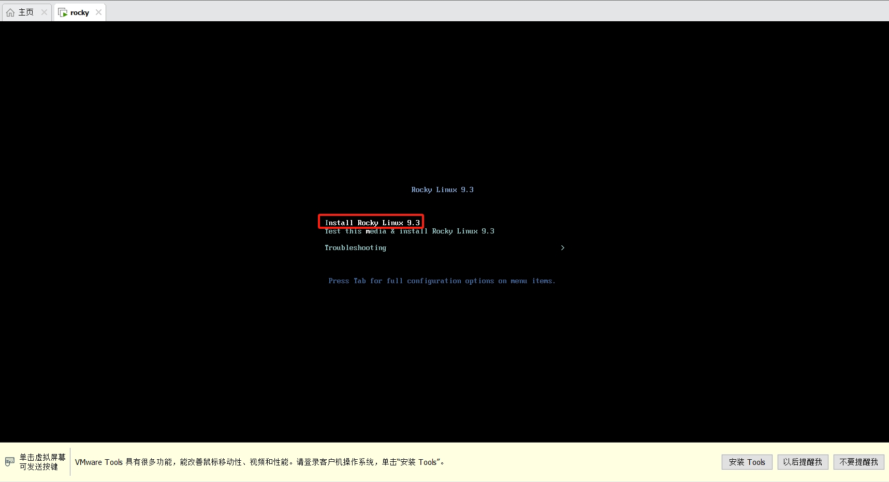提示
在虚拟机中单击后，鼠标将被定向到虚拟机中没有响应，如果此时想找回鼠标的控制权，在键盘上按住左下角的Ctrl键不动后，再按Alt键，鼠标将重新回到windows系统中。
虚拟机启动不久后，将出现以下画面：
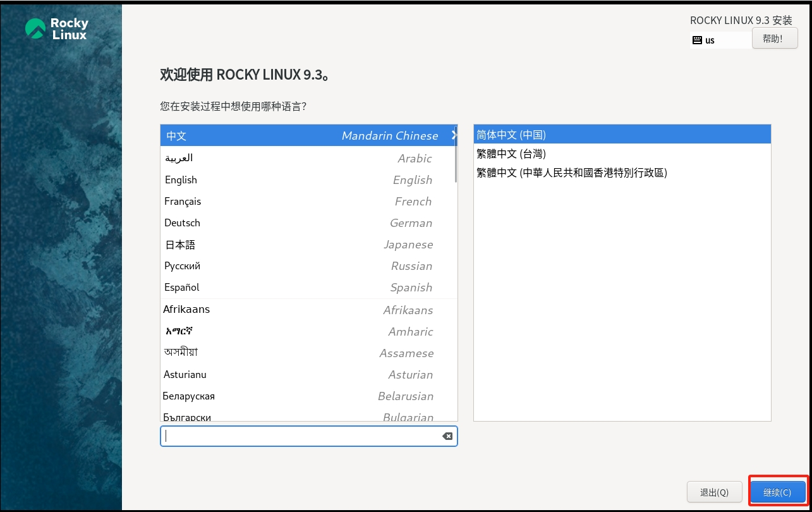直接点击继续，默认使用中文即可，然后来到下一步：
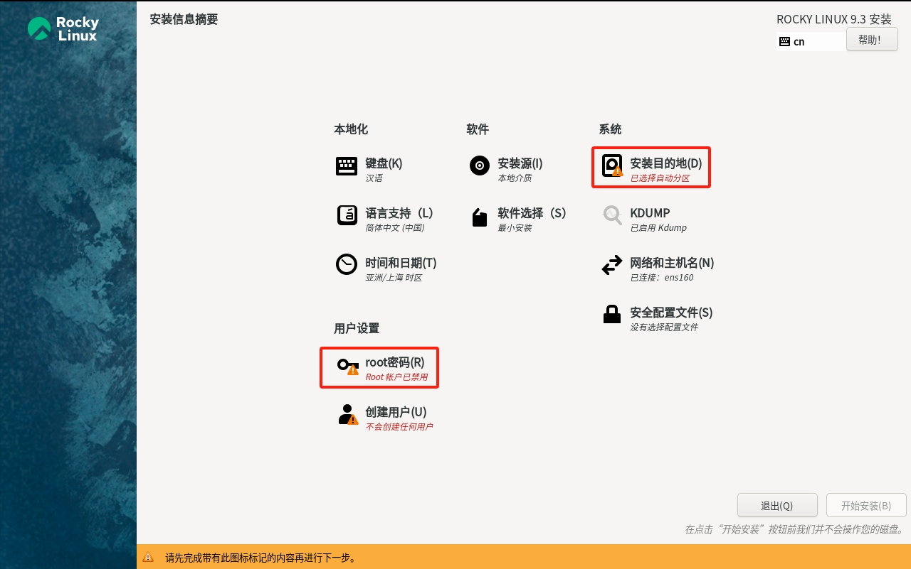此时我们仅需解决 安装目的地 和 root密码 就可以，点击安装目的地，然后直接点击完成：
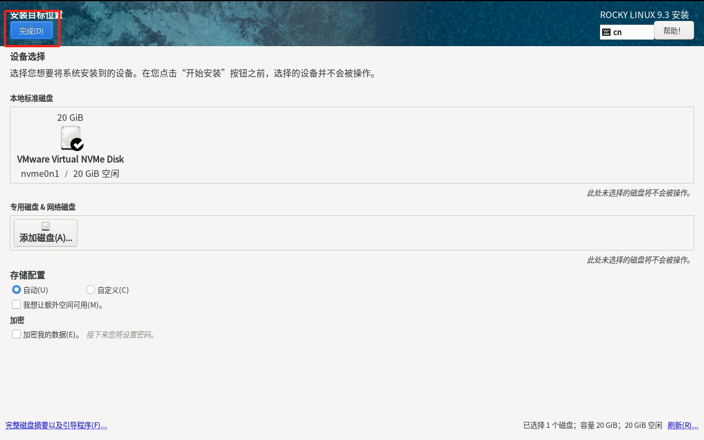点击root密码，输入两次同样的密码后，注意勾选 允许root用户使用密码进行SSH登录 选项，然后点击完成。
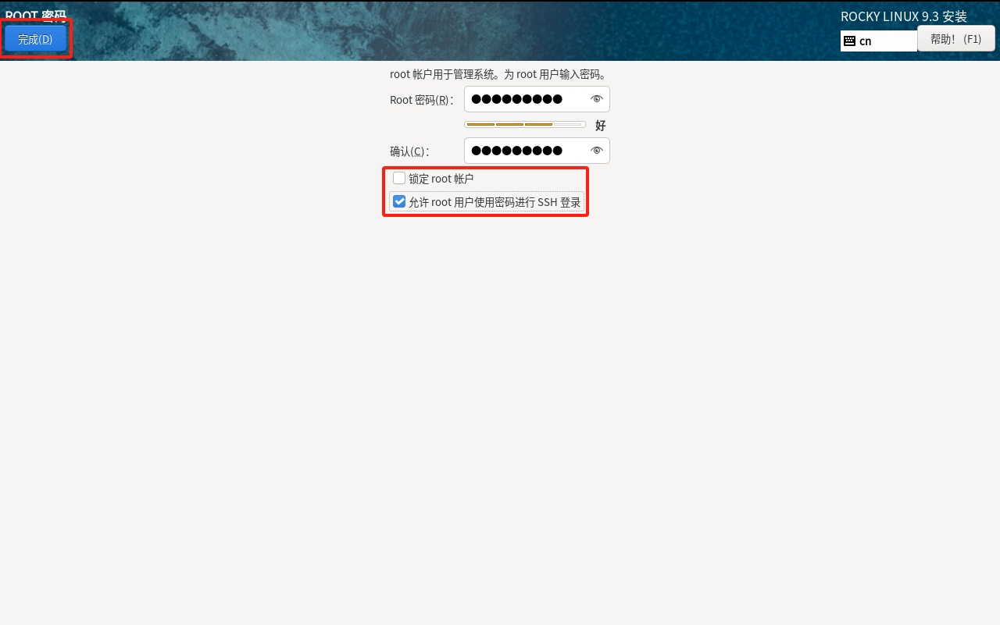此时完成了所有待安装步骤，点击开始安装即可：
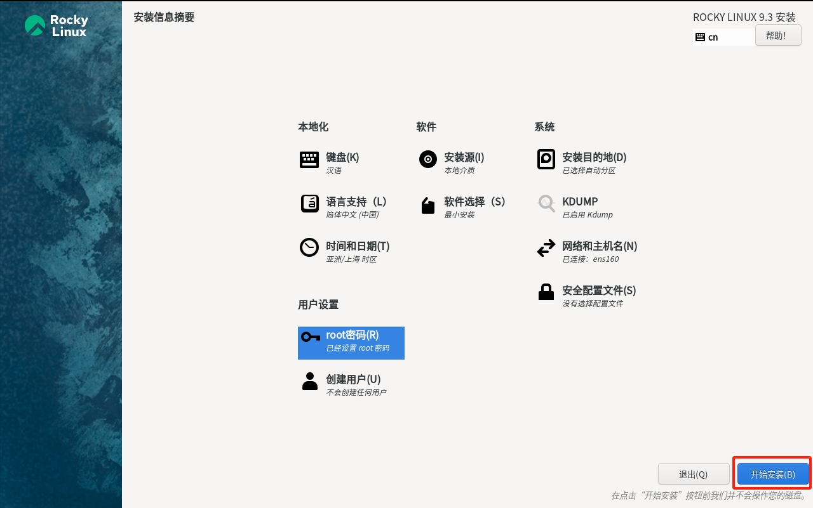现在只需等待系统安装，等系统安装完成后，点击重启系统，系统就安装好了。

配置远程访问Rocky Linux#
在安装完成重启后，系统会出现如下界面：
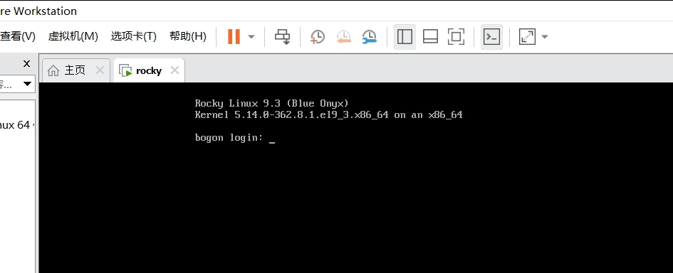这就是命令行模式，它此时没有图表化界面，在login后输入root，然后按回车键，接着输入安装时设置的密码，不过这里要注意，输入密码时界面不会有任何变化，但只要你保证密码输入正确，然后按回车后就可以成功登录安装好的系统了：
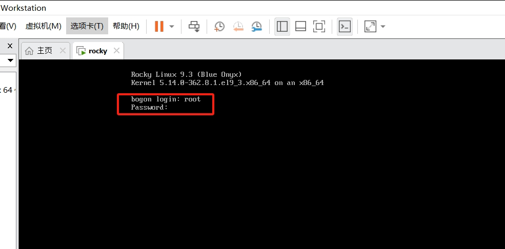警告
如果输入的密码有误，界面会提示 login incorrect ，注意大小写的切换，如果忘记了密码，那只能重新安装Rocky Linux了。
登录成功的界面是这样的：
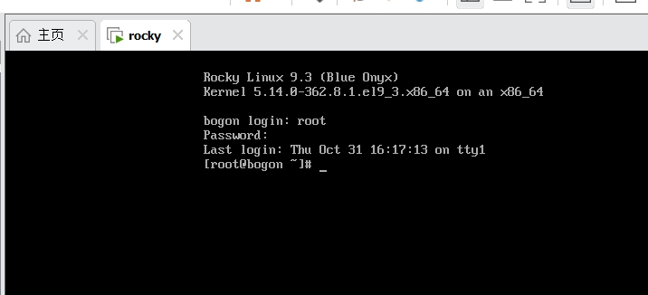这个界面用起来很不便，此时我们便可以配置xshell来访问了，先获取安装好的系统IP地址，在虚拟机里输入 ip a ，然后就得到虚拟机的ip地址了：
上图红框处便是ip地址，打开xshell，在弹出来的菜单中点击新建：
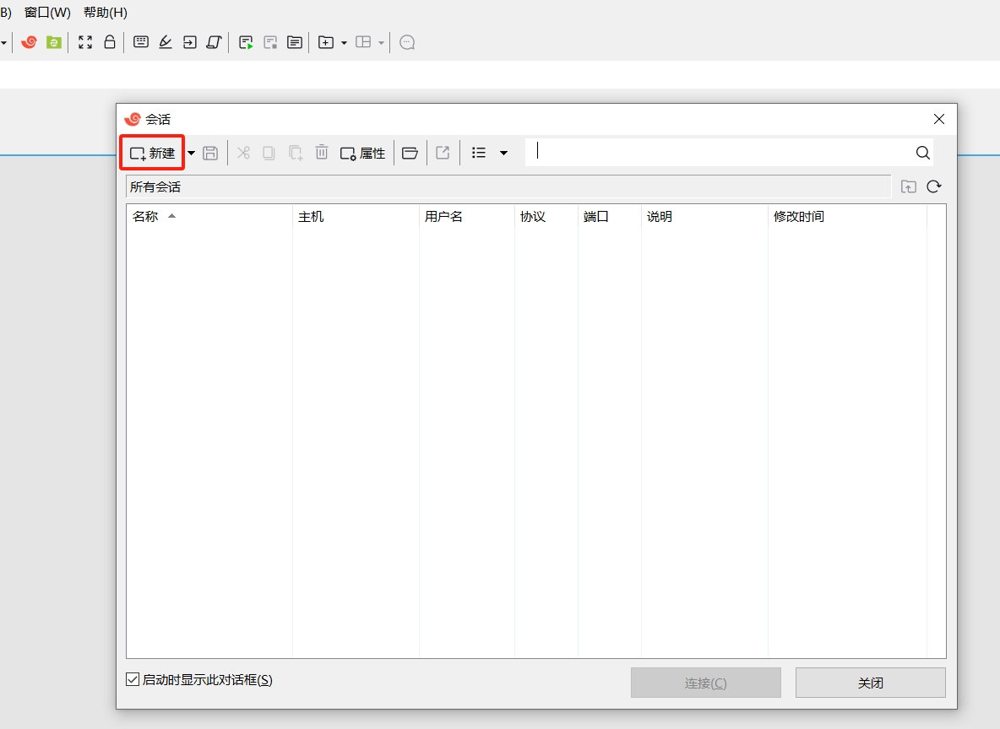然后在名称里输入rocky（可自己命名），然后在主机里输入通过 ip a 查到的ip地址，最后点击确定即可：
点击连接，将连接我们配置好的虚拟机地址：
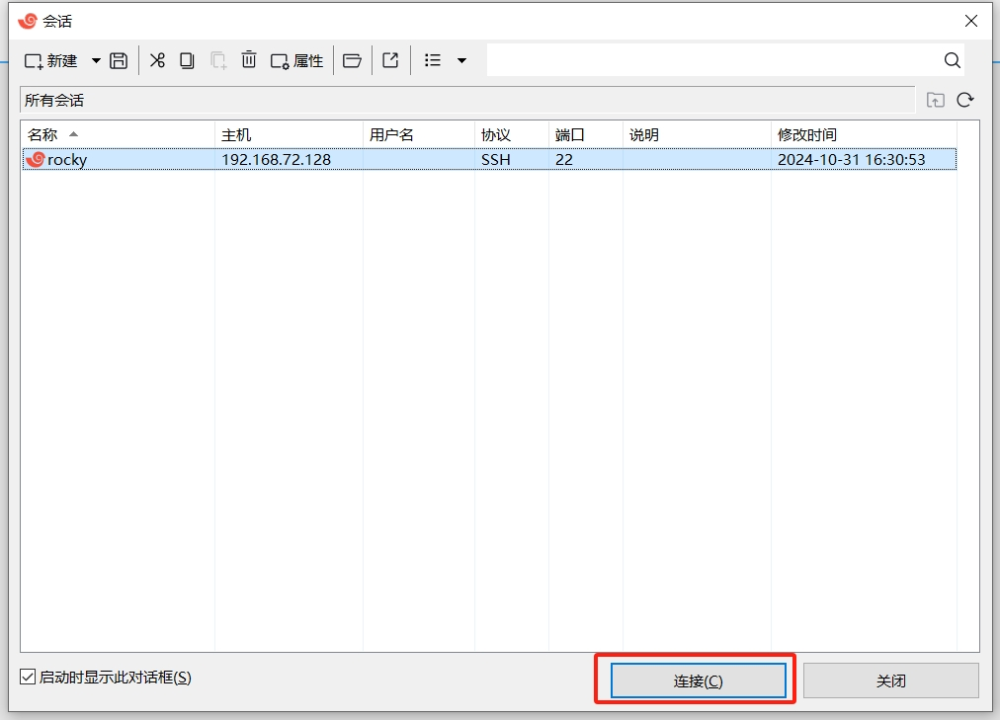点击接受并保存：
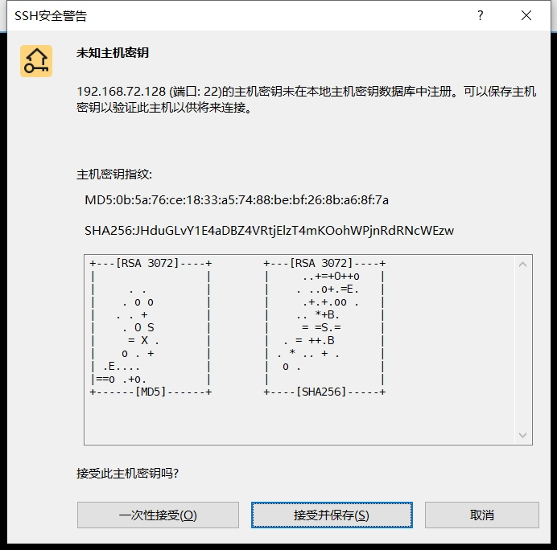输入用户名root，并勾选记住用户名，然后点击确定：
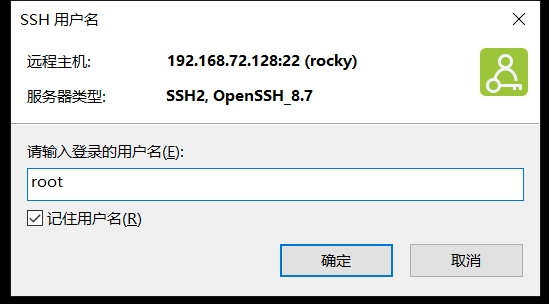输入安装系统时设置的密码，并勾选记住密码，然后点击确定：
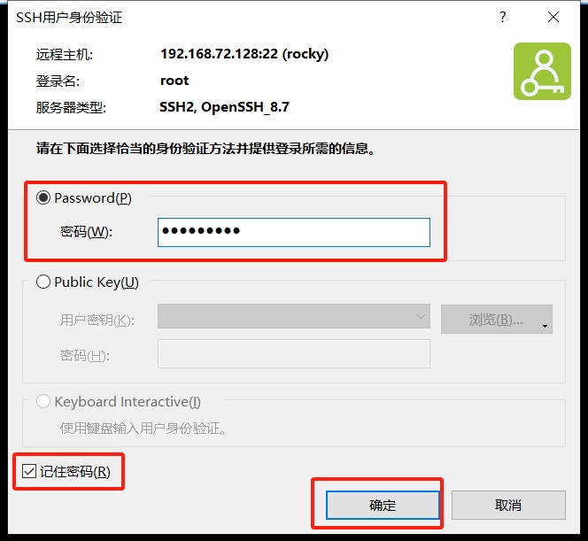最后我们成功通过xshell登录到虚拟机中的Rocky Linux系统中：
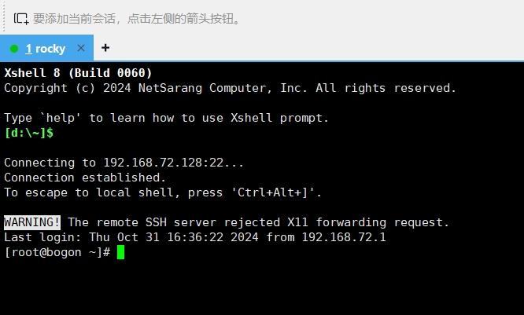